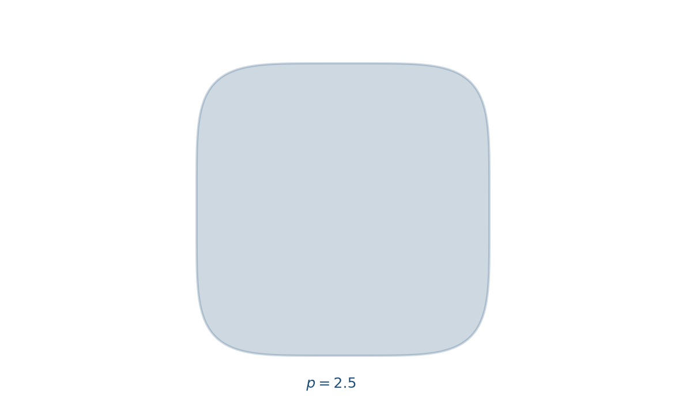
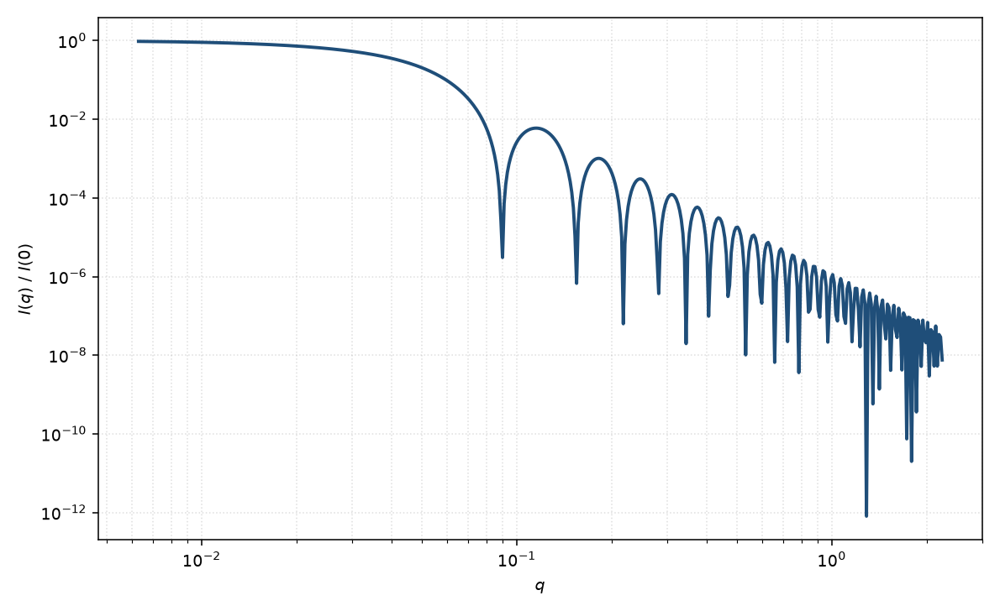

超球
superball
适用场景
超球是一族由指数 $p$ 控制的超二次曲面，在球（$p=1$）与立方体（$p\to\infty$）之间连续变形，也可取 $p<1$ 偏向八面体。适用于圆角立方纳米颗粒、超球胶体、以及“既不像完美球也不像尖角立方”的等轴粒子（Baus & Colot 的超二次体；Jiao 等的超球堆积）。
若粒子明显是矩形棱柱或平行六面体，应直接用平行六面体类，而不是把 $p$ 推到极大。$p$ 接近 1 时与均匀球在有限 $q$ 上几乎无法分辨。
物理图像
形状方程 $|x|^{2p}+|y|^{2p}+|z|^{2p}=R^{2p}$。$p=1$ 为球；$p\to\infty$ 为边长 $2R$ 的立方。形式因子一般无简单闭式，需取向平均的三维傅里叶变换或级数/数值积分。$p$ 增大时，高 $q$ 振荡相位向立方体的面法向特征移动，且因棱角出现，$I(q)$ 的极小不如球深。
示意图


核心公式
出发点
均匀超球的振幅仍是衬度对平面波相位的体积分，只是积分域由超二次曲面围成
$$F(\mathbf{q})=\Delta\rho\int_{V(p,R)}\mathrm{e}^{-i\mathbf{q}\cdot\mathbf{r}}\,\mathrm{d}^3 r,\qquad \lvert x\rvert^{2p}+\lvert y\rvert^{2p}+\lvert z\rvert^{2p}=R^{2p}.$$$p=1$ 时域是半径 $R$ 的球；$p\to\infty$ 时域是边长 $2R$ 的立方。粉末或溶液需再对取向平均。
推导
$p=1$：球对称，角积分给出 $\sin(qr)/(qr)$，再令 $u=qr$ 分部积分，回到 Rayleigh 闭式 $F=\Delta\rho V\Phi(qR)$，$\Phi(x)=3(\sin x-x\cos x)/x^3$。
$p\neq 1$：一般无简单闭式。可在粒子坐标系把 $\mathbf{q}$ 写成相对超球轴的方向 $(\theta,\phi)$，对域 $V(p,R)$ 做三维数值积分（或沿超球半径的一维积分再角向求积），得到 $F(\mathbf{q};p,R)$。粉末形式因子
$$P(q)=\frac{\langle |F(\mathbf{q})|^2\rangle_{\Omega}}{|F(0)|^2}.$$$F(0)=\Delta\rho\,\mathrm{Vol}(p,R)$。超球体积有已知表达式（含 Beta 函数）：$p=1$ 时 $4\pi R^3/3$；$p\to\infty$ 时 $(2R)^3$。立方极限也可改用平行六面体的解析形式因子再取向平均作为校核。
低 $q$ 与极限
任意形状的 Guinier 展开 $P=1-q^2 R_g^2/3+O(q^4)$ 仍成立。$p=1$ 时 $R_g=R\sqrt{3/5}$。立方（边长 $a=2R$）$R_g^2=a^2/4=R^2$，即 $R_g=R$。中间 $p$ 的 $R_g(p)$ 介于两者之间，随 $p$ 单调变化。
$p=1$ 的零点在 $\tan x=x$。$p$ 增大时极小变浅、相位向立方体面法向特征移动。尖锐界面的粉末平均包络仍是 Porod $q^{-4}$；棱角使振荡不如球深。$p\to 1$ 在有限 $q$ 窗上几乎无法与均匀球分辨。
参数表
| 参数 | 符号 | 含义 | 单位 | 典型范围 |
|---|---|---|---|---|
| 尺度半径 | $R$ | 超球方程中的尺度（$p=1$ 时即球半径） | Å 或 nm | 10–1000 Å |
| 形状指数 | $p$ | $p=1$ 球；$p\to\infty$ 立方；$p=0.5$ 八面体极限附近 | 无量纲 | 0.5–8 常用 |
| 衬度 | $\Delta\rho$ | 均匀超球相对溶剂的 SLD 差 | Å$^{-2}$ | 组成决定 |
| 取向 | $\Omega$ | 粉末取向平均；单晶需欧拉角 | — | 溶液中各向同性 |
拟合注意
$p$ 与尺寸多分散竞争：二者都浅化极小。电镜若显示圆角立方，应优先让 $p$ 自由并尽量窄分布；若电镜是球，不要用 $p$ 去吸收 smearing。
$p$ 显著偏离 1 时取向不再平凡：溶液中仍可取向平均，但剪切或磁场下超球会择优取向，须显式欧拉角。磁性超球的磁 SLD 若均匀，磁形式因子与核形式因子同形，仅衬度不同；表面磁各向异性则不是简单超球。
相近模型
参考文献
- Baus, M.; Colot, J. L. Thermodynamics and structure of a fluid of hard rods, disks, spheres, or hyperspheres from rescaled virial expansions. Phys. Rev. A 1987, 36, 3912–3925. DOI: 10.1103/PhysRevA.36.3912
- Jiao, Y.; Stillinger, F. H.; Torquato, S. Optimal packings of superballs. Phys. Rev. E 2009, 79, 041309. DOI: 10.1103/PhysRevE.79.041309